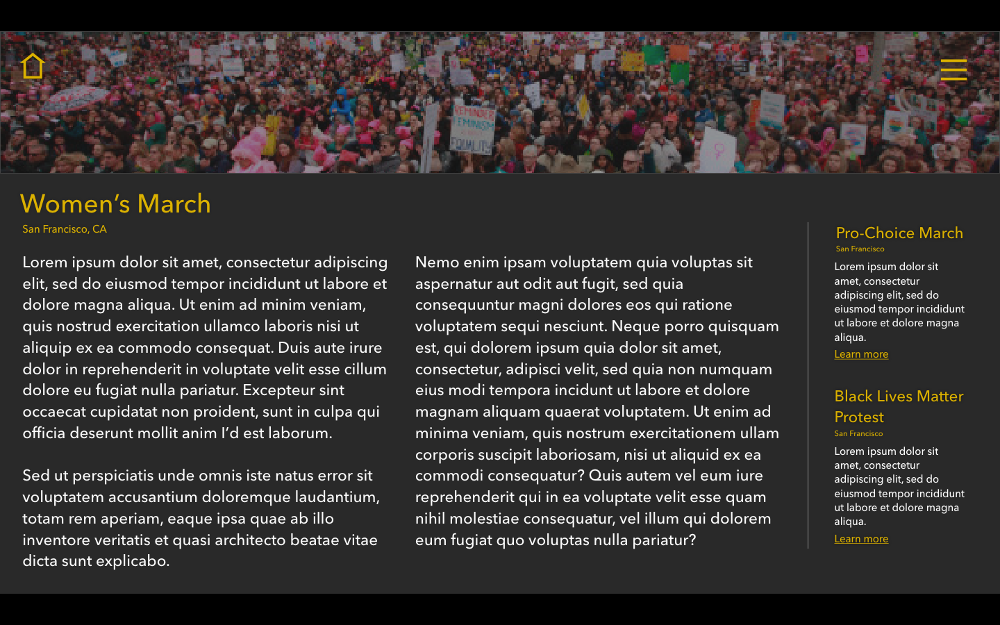

I thought that the dark gray and gold color scheme was one that was powerful and representative of protest. Also, I think that the white outline of the map on the dark background is easier to see.
I made sure to use a clear and legible font, Avenir Next. It is a san serif font that I thought was ideal for the web and works well for my purpose. I used the gold color for the title and the white for the body copy to create clear heirarchy and legibility.
On the details page, I thought it was be a good idea to include an automated scroll of images to give readers the full effect of the event. The two columns with large text makes for an easy read. Instead of including the title of the site (which would interfere with the images) I created a home button.